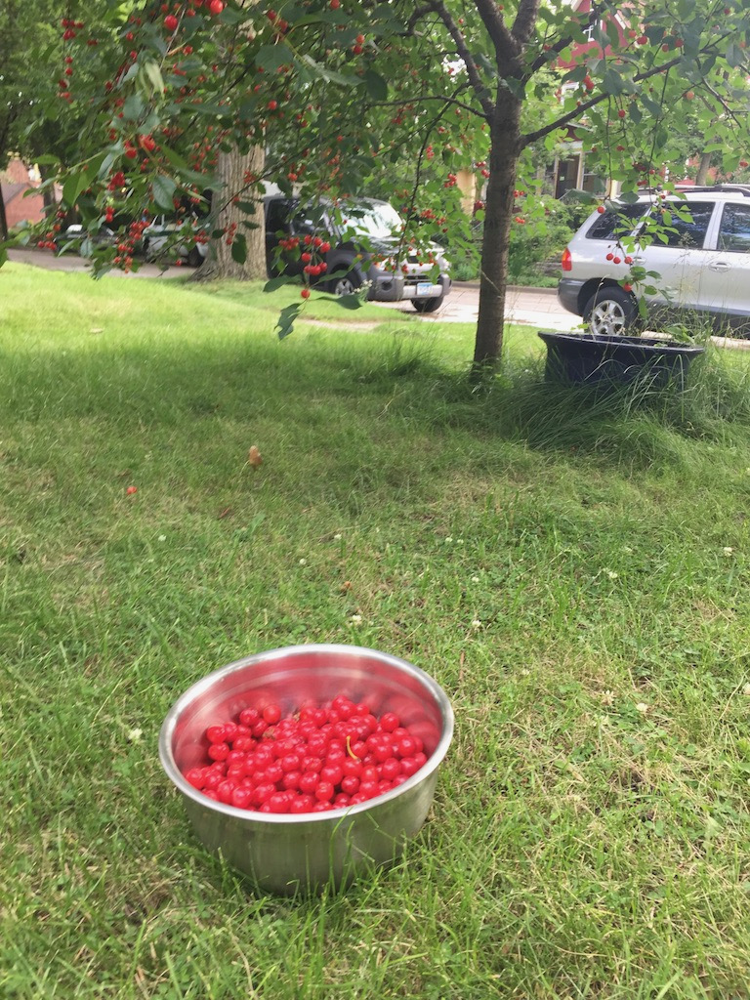

Sour Cherry Ice Cream

Description
Make your own sour cherry ice cream! If you don't have access to sour (or tart) cherries, feel free to substitute regular cherries and decrease the amount of sugar a bit.
Ingredients
- 3c sour cherries
- 1c sugar
- 2c whole milk
- 2.5c heavy whipping cream
Steps
- Mix cherries with .5c sugar and let sit overnight.
- Blend the cherry/sugar mixture. Vitamix is great for this.
- Add rest of the sugar and whole milk to the cherry/sugar mixture. Blend thoroughly.
- Add heavy whipping cream. Blend just enough to get it evenly distributed, at low speed.
- Follow ice cream maker's instructions to turn the delicious liquid into ice cream consistency.